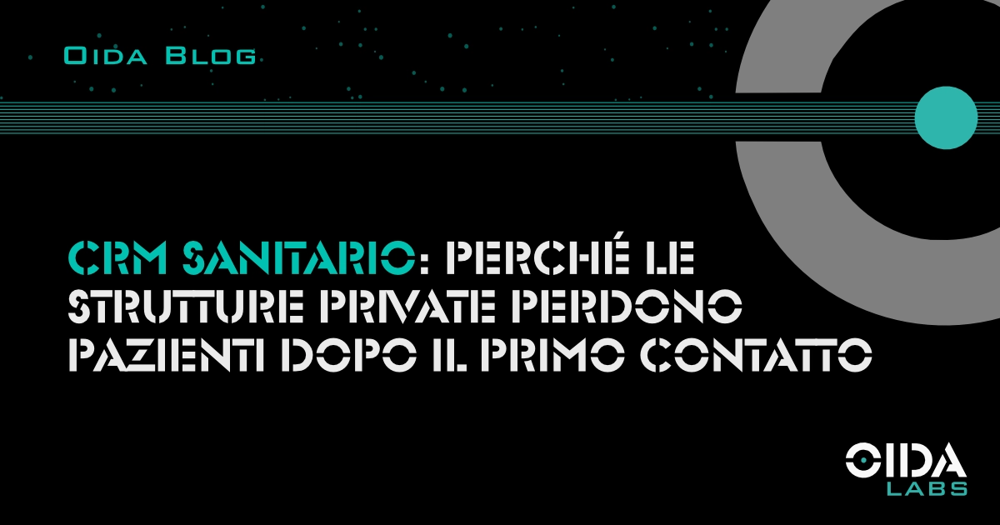

← Tutti gli articoliCRM sanitario: perché le strutture private perdono pazienti dopo il primo contatto
Un CRM sanitario non è un software: è il processo che determina quanti lead diventano pazienti. Cosa succede nelle strutture che non lo governano in modo sistematico.
Il problema non è generare contatti. Le strutture sanitarie private che investono in campagne digitali riescono quasi sempre a generare lead. Il problema è cosa succede dopo: chi risponde, quando risponde, con quale processo e con quale continuità. In assenza di un sistema strutturato, ogni contatto generato dalle campagne viene affidato all’efficienza individuale di chi risponde al telefono o controlla la casella email. Il risultato è sistematico: dispersione di contatti che avrebbero potuto diventare pazienti.
Il CRM sanitario non è un software da acquistare. È un processo da costruire, di cui il software è solo lo strumento di esecuzione.
- Cos’è un CRM sanitario e perché serve davvero
- I tre punti in cui le strutture perdono i lead
- Come si costruisce una pipeline paziente funzionante
- Il dato che le strutture non hanno
- CRM e AI: cosa aggiunge l’automazione
- FAQ
Cos’è un CRM sanitario e perché serve davvero
Cosa si intende per CRM sanitario e quale funzione svolge in una struttura privata?
CRM è l’acronimo di Customer Relationship Management. In un contesto sanitario, il termine “customer” è impreciso (parliamo di pazienti, non di clienti), ma la funzione è analoga: tracciare, organizzare e governare ogni interazione con chi entra in contatto con la struttura, dal primo messaggio o chiamata fino alla visita erogata e oltre.
Un CRM sanitario consente di sapere in ogni momento quanti contatti ci sono in entrata, in quale fase si trovano, chi li sta gestendo, da quanto tempo non ricevono risposta e quali di loro hanno già fissato un appuntamento. Senza questo sistema, queste informazioni vivono nella memoria del personale di front desk, in fogli di calcolo non condivisi o in conversazioni WhatsApp personali. Quando il personale cambia, quell’informazione sparisce.
La funzione strategica del CRM non è automatizzare: è rendere il processo misurabile. Una struttura che sa quanti lead arrivano, quanti ricevono risposta, quanti fissano un appuntamento e quanti si presentano può calcolare il proprio tasso di conversione reale e intervenire sul punto specifico in cui il funnel perde efficienza.
I tre punti in cui le strutture perdono i lead
Dove si disperdono i contatti generati dalle campagne in una struttura sanitaria privata?
L’analisi su strutture sanitarie monitorate da OIDA Labs tra il 2023 e il 2025 mostra che la dispersione si concentra in tre punti ricorrenti, indipendentemente dalla dimensione della struttura e dalla specialità.
Il primo punto è il tempo di risposta al primo contatto. Il lead che compila un form o invia un messaggio su WhatsApp sta valutando più strutture in parallelo. Se la risposta arriva dopo ore o il giorno successivo, la probabilità che il paziente abbia già scelto un’altra struttura è alta. Questo dato è documentato anche dalla ricerca MIT Sloan/InsideSales.com sul Lead Response Management, che quantifica il calo di probabilità di conversione al di fuori della finestra critica, analizzato in dettaglio nel nostro articolo sulla differenza tra CPL e CAC nel marketing sanitario.
Il secondo punto è la qualità del primo contatto. Una risposta che non risponde alla domanda specifica del paziente, che si limita a fornire orari e tariffe generali senza costruire fiducia, converte a tassi significativamente più bassi rispetto a una risposta personalizzata che affronta la preoccupazione specifica del paziente. Questo non è un problema di formazione commerciale: è un problema di processo, perché il personale di front desk non può ogni volta improvvisare una risposta efficace se non ha strumenti e linee guida chiare.
Il terzo punto è la gestione dei lead non convertiti immediatamente. Un paziente che non fissa un appuntamento al primo contatto non è necessariamente un lead perso: può essere in una fase di valutazione, può aver rimandato per ragioni logistiche, può aver confrontato preventivi. Senza un sistema di follow-up strutturato, questo lead non viene più contattato e la struttura rinuncia a una conversione potenziale. Nelle strutture monitorate da OIDA Labs, il follow-up sui lead non convertiti è la fase più sistematicamente assente, indipendentemente dal volume di contatti generato.
Come si costruisce una pipeline paziente funzionante
Quali sono le componenti di una pipeline paziente efficace in un CRM sanitario?
Una pipeline paziente efficace ha stadi definiti, responsabili assegnati per ogni stadio e tempi massimi di permanenza in ogni fase prima che venga attivata un’azione di follow-up.
Gli stadi standard in una struttura sanitaria privata sono:
- Contatto in entrata non ancora lavorato
- Primo contatto effettuato
- Appuntamento fissato
- Appuntamento confermato
- Visita erogata
- Paziente in follow-up
Ogni stadio richiede un’azione specifica da parte di chi gestisce il CRM, e ogni passaggio di stadio va tracciato.
La parte più critica è la definizione dei tempi. Un lead in “primo contatto non effettuato” non deve restare lì per più di un tempo definito internamente (generalmente due-quattro ore durante l’orario operativo). Un lead in “appuntamento fissato” deve ricevere una conferma automatica e un promemoria prima della data. Un paziente che ha saltato l’appuntamento senza cancellare deve essere ricontattato entro 24 ore.
Queste regole non si implementano nel CRM: si progettano prima, come processo. Il software le automatizza dove possibile e le rende visibili dove richiedono intervento umano.
Il dato che le strutture non hanno
Qual è la metrica che le strutture sanitarie private ignorano più frequentemente nel monitoraggio dei lead?
La metrica ignorata più frequentemente è il tasso di conversione per fase della pipeline. Le strutture conoscono quasi sempre il numero totale di lead generati dalle campagne. Poche sanno quanti di quei lead ricevono effettivamente risposta entro quattro ore, quanti di quelli che ricevono risposta fissano un appuntamento e quanti degli appuntamenti fissati vengono poi onorati.
Senza questa visibilità per fase, è impossibile sapere dove intervenire. Una struttura con un tasso di risposta entro quattro ore del 40% e un tasso di conversione da risposta ad appuntamento del 50% ha un problema diverso da una struttura con un tasso di risposta del 90% e un tasso da risposta ad appuntamento del 15%. Nel primo caso il collo di bottiglia è la velocità di risposta, nel secondo è la qualità del primo contatto o l’offerta stessa. Intervenire senza sapere dov’è il problema significa investire tempo e risorse nella parte sbagliata del funnel.
Il collegamento tra CPL (costo per lead delle campagne) e CAC reale (costo per paziente acquisito) dipende esattamente da questa visibilità. Chi non monitora le fasi della pipeline non può calcolare il CAC reale, e quindi non può valutare se il budget investito in campagne è proporzionato ai risultati effettivi.
CRM e AI: cosa aggiunge l’automazione
Come l’intelligenza artificiale migliora la gestione del CRM in una struttura sanitaria?
L’automazione AI in un CRM sanitario interviene principalmente su tre attività: notifiche e alert in tempo reale per i lead che superano la soglia di tempo senza risposta, sequenze di follow-up automatiche per i lead non convertiti, e scoring dei contatti in entrata per aiutare il front desk a prioritizzare.
Il valore dell’automazione non è eliminare il lavoro umano — la decisione clinica e la costruzione di fiducia con il paziente richiedono intervento umano — ma eliminare la parte meccanica e ripetitiva che consuma attenzione e crea errori di omissione. Un sistema che notifica automaticamente quando un lead supera due ore senza risposta non sostituisce chi risponde: assicura che nessun lead venga dimenticato per distrazione o sovraccarico operativo.
Le implicazioni più ampie dell’AI applicata al marketing sanitario, incluse automazione del follow-up, riduzione dei no-show e ottimizzazione delle campagne, sono analizzate nell’articolo dedicato.
Sintesi
Un CRM sanitario è lo strumento che trasforma la gestione dei lead da attività individuale a processo misurabile e migliorabile. Le strutture che lo costruiscono in modo sistematico ottengono un vantaggio competitivo stabile: non perché abbiano campagne più performanti, ma perché convertono una quota maggiore dei contatti che già generano. Il punto di partenza non è il software: è la definizione del processo, delle fasi della pipeline e delle responsabilità per ciascuna fase.
FAQ
Quale CRM è più adatto per una struttura sanitaria privata di medie dimensioni?
Non esiste una risposta universale, perché la scelta dipende dal volume di contatti, dalla complessità delle specialità gestite, dall’integrazione richiesta con il gestionale clinico e dal livello di personalizzazione necessario. I sistemi più usati in ambito sanitario privato italiano sono HubSpot, Salesforce Health Cloud, Monday.com configurato per use case sanitari e soluzioni verticali specifiche per healthcare. La scelta va preceduta da un’analisi del processo attuale: un CRM sofisticato su un processo non definito produce caos digitale invece di efficienza.
Quanto tempo serve per implementare un CRM funzionante in una struttura sanitaria?
Un’implementazione con pipeline definite, automazioni di base e personale formato richiede generalmente tra 6 e 12 settimane. Il tempo dipende più dalla complessità del processo interno e dalla qualità dei dati storici da importare che dalla piattaforma scelta. Le implementazioni che falliscono o restano inutilizzate saltano quasi sempre la fase di progettazione del processo e passano direttamente all’acquisto del software.
Il GDPR impone vincoli specifici alla gestione dei dati pazienti in un CRM sanitario?
Sì. I dati sanitari sono categoria protetta ai sensi del GDPR (art. 9) e il loro trattamento richiede base giuridica specifica, consenso esplicito per le finalità di marketing, nomina del responsabile del trattamento se il CRM è gestito da terzi, e misure di sicurezza adeguate alla sensibilità dei dati. Ogni implementazione di CRM sanitario deve essere accompagnata da una valutazione giuridica dei flussi di dati e da una revisione della privacy policy della struttura.
Fonti: Dati interni OIDA Labs (analisi su strutture sanitarie private monitorate 2023–2025), MIT Sloan / InsideSales.com Lead Response Management Study, Regolamento UE 2016/679 (GDPR) artt. 9, 13, 28, HubSpot Healthcare CRM Implementation Guide 2025.